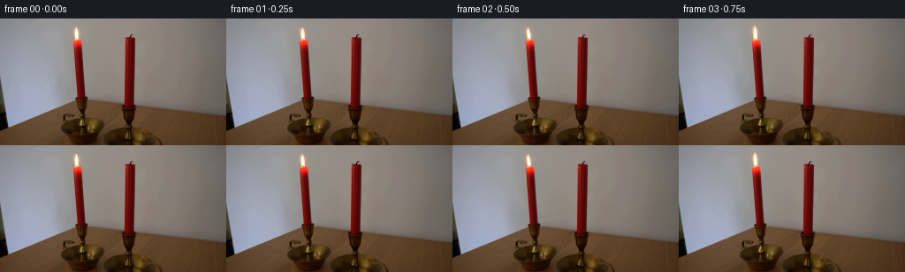
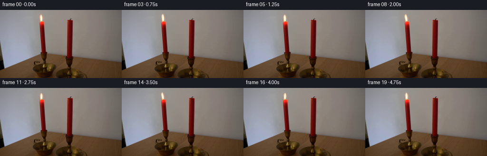
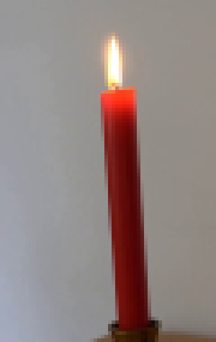
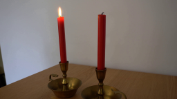
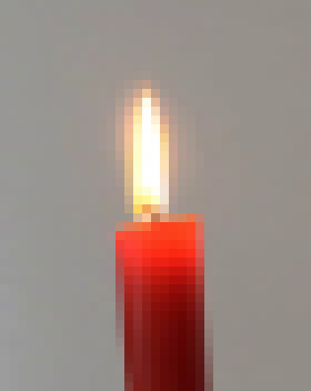
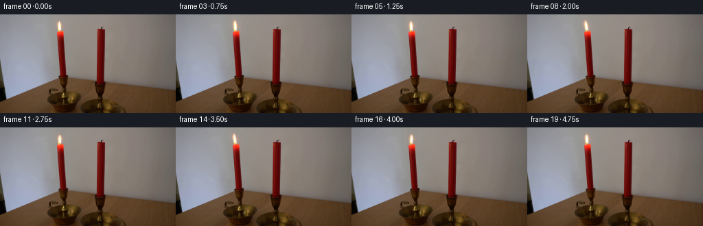
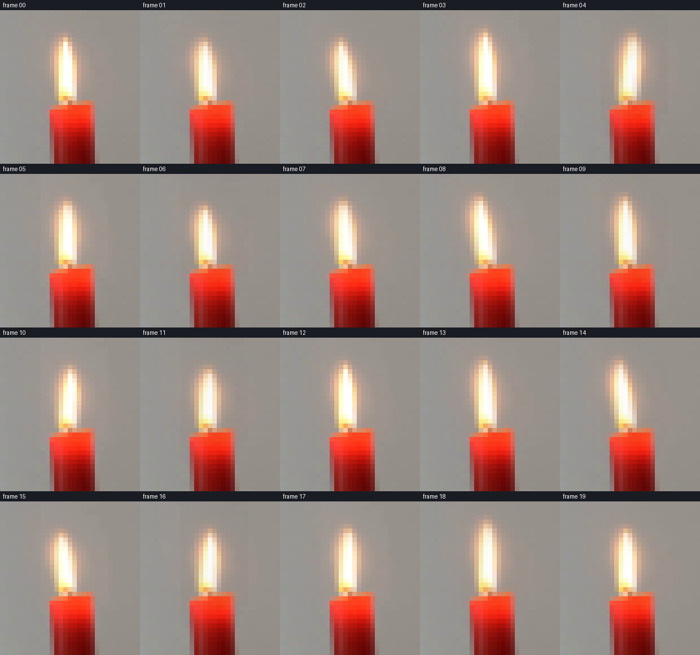
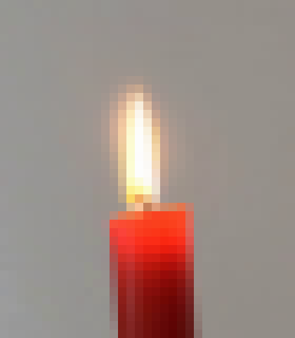
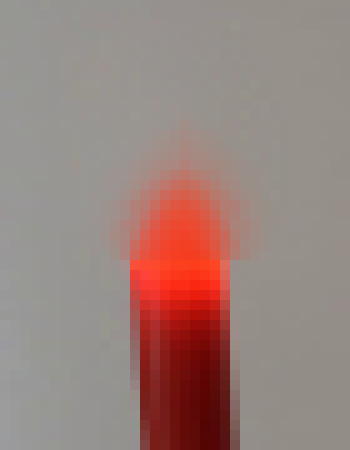
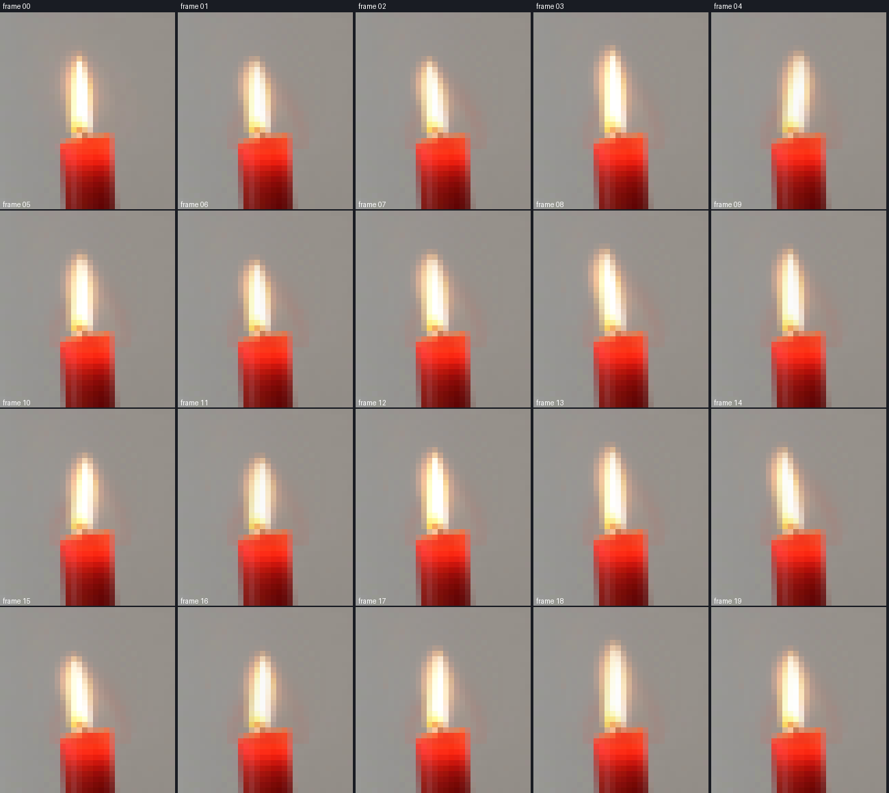

CODING AGENTS AS PIXEL WORLD MODELS
traex/DeepSeek-V4.1-Flash · 0093
点击播放 · 原生 RGB 像素
逐轮保存的候选
回放视频、检查图与代码变化。
每份候选均可单独播放。实际图片检查记录在下方工具轨迹中。
候选 01播放与检查图
点击播放 · 原生 RGB 像素


展开代码变化
--- 上一保存版本
+++ 本次保存版本
@@ -0,0 +1,96 @@
+from pathlib import Path
+
+import numpy as np
+from PIL import Image
+from scipy.ndimage import map_coordinates
+
+from artifact_io import save
+
+
+CASE_DIR = Path(__file__).resolve().parent
+FRAME_COUNT = 20
+FPS = 4.0
+
+
+def smoothstep(value):
+ value = np.clip(value, 0.0, 1.0)
+ return value * value * (3.0 - 2.0 * value)
+
+
+def render_flame_frame(source, frame_index):
+ if frame_index == 0:
+ return source.copy()
+
+ height, width = source.shape[:2]
+ t = frame_index / FPS
+
+ # Incommensurate, low-frequency terms give a smooth but non-repeating sway.
+ sway = (
+ 0.74 * np.sin(2.0 * np.pi * 0.63 * t + 0.45)
+ + 0.43 * np.sin(2.0 * np.pi * 1.37 * t + 2.15)
+ + 0.16 * np.sin(2.0 * np.pi * 2.45 * t + 0.80)
+ )
+ height_scale = (
+ 1.0
+ + 0.050 * np.sin(2.0 * np.pi * 0.83 * t + 0.15)
+ + 0.018 * np.sin(2.0 * np.pi * 2.10 * t + 1.45)
+ )
+ width_scale = (
+ 1.0
+ + 0.032 * np.sin(2.0 * np.pi * 1.08 * t + 1.10)
+ + 0.012 * np.sin(2.0 * np.pi * 2.72 * t + 2.30)
+ )
+
+ yy, xx = np.mgrid[0:height, 0:width].astype(np.float32)
+ flame_base = 30.0
+ vertical_weight = smoothstep((flame_base - yy) / 20.0)
+ vertical_weight *= smoothstep((xx - 76.0) / 3.0)
+ vertical_weight *= smoothstep((100.0 - xx) / 3.0)
+ vertical_weight *= smoothstep((34.0 - yy) / 3.0)
+
+ # The upper flame bends more than the wick, with a small width pulse.
+ dx = sway * (0.35 + 1.05 * vertical_weight) * vertical_weight
+ dy = (flame_base - yy) * (1.0 - height_scale) * vertical_weight
+ source_x = xx + dx
+ source_y = yy + dy
+ source_x = 87.8 + (source_x - 87.8) / (
+ 1.0 + (width_scale - 1.0) * vertical_weight
+ )
+
+ warped = np.empty_like(source, dtype=np.float32)
+ for channel in range(3):
+ warped[..., channel] = map_coordinates(
+ source[..., channel].astype(np.float32),
+ [source_y, source_x],
+ order=1,
+ mode="nearest",
+ prefilter=False,
+ )
+
+ # A very small brightness pulse keeps the flame alive without changing the scene.
+ brightness = 1.0 + 0.018 * np.sin(2.0 * np.pi * 1.65 * t + 0.9)
+ warm_core = (
+ (yy < 32.0)
+ & (xx > 80.0)
+ & (xx < 96.0)
+ & (warped[..., 0] > 150.0)
+ & (warped[..., 1] > 42.0)
+ )
+ warped[warm_core] *= brightness
+
+ result = np.clip(np.rint(warped), 0, 255).astype(np.uint8)
+ return result
+
+
+def main():
+ source = np.asarray(Image.open(CASE_DIR / "first_frame.png").convert("RGB"))
+ frames = np.stack(
+ [render_flame_frame(source, index) for index in range(FRAME_COUNT)]
+ )
+ assert frames.shape == (FRAME_COUNT, 144, 256, 3)
+ assert np.array_equal(frames[0], source)
+ save(frames, CASE_DIR)
+
+
+if __name__ == "__main__":
+ main()
候选 02播放与检查图
点击播放 · 原生 RGB 像素

展开代码变化
--- 上一保存版本
+++ 本次保存版本
@@ -1,8 +1,9 @@
from pathlib import Path
import numpy as np
+import cv2
from PIL import Image
-from scipy.ndimage import map_coordinates
+from scipy.ndimage import gaussian_filter, map_coordinates
from artifact_io import save
@@ -23,6 +24,24 @@
height, width = source.shape[:2]
t = frame_index / FPS
+
+ # Recover the wall behind the flame, then use the original flame as a
+ # feathered foreground sprite. The candle itself is outside this plate.
+ repair_mask = np.zeros((height, width), dtype=np.uint8)
+ cv2.ellipse(repair_mask, (88, 16), (10, 13), 0, 0, 360, 255, -1)
+ repair_mask[27:] = 0
+ background = cv2.inpaint(
+ source, repair_mask, 7, cv2.INPAINT_TELEA
+ ).astype(np.float32)
+ color_delta = np.sqrt(
+ ((source.astype(np.float32) - background) ** 2).sum(axis=2)
+ )
+ alpha = smoothstep((color_delta - 5.0) / 30.0)
+ alpha = gaussian_filter(alpha, sigma=0.55)
+ alpha *= smoothstep((30.5 - np.arange(height)) / 2.0)[:, None]
+ alpha[:, :76] = 0.0
+ alpha[:, 100:] = 0.0
+ alpha = alpha.astype(np.float32)
# Incommensurate, low-frequency terms give a smooth but non-repeating sway.
sway = (
@@ -67,6 +86,15 @@
prefilter=False,
)
+ warped_alpha = map_coordinates(
+ alpha,
+ [source_y, source_x],
+ order=1,
+ mode="constant",
+ cval=0.0,
+ prefilter=False,
+ )
+
# A very small brightness pulse keeps the flame alive without changing the scene.
brightness = 1.0 + 0.018 * np.sin(2.0 * np.pi * 1.65 * t + 0.9)
warm_core = (
@@ -78,7 +106,8 @@
)
warped[warm_core] *= brightness
- result = np.clip(np.rint(warped), 0, 255).astype(np.uint8)
+ composited = background + warped_alpha[..., None] * (warped - background)
+ result = np.clip(np.rint(composited), 0, 255).astype(np.uint8)
return result
可观测工具轨迹
实际执行的命令与返回图片。
命令 1exit 0
/bin/bash -c "pwd && rg --files -g 'prompt.txt' -g 'GENERATION_RULES.md' -g '*.py' -g '*.sh' -g '*.md' | sort"
命令 2exit 0
/bin/bash -c "sed -n '1,240p' prompt.txt"
命令 3exit 0
/bin/bash -c "sed -n '1,280p' GENERATION_RULES.md"
命令 4exit 127
/bin/bash -c 'ls -la && file first_frame.png && git status --short'
命令 5exit 0
/bin/bash -c "sed -n '1,260p' artifact_io.py"
命令 6exit 0
/bin/bash -c "sed -n '1,260p' player_template.html"
命令 7exit 0
/bin/bash -c "python3 - <<'PY'
from PIL import Image
im=Image.open('first_frame.png')
print(im.mode, im.size)
print(im.getpixel((84,33)), im.getpixel((84,48)), im.getpixel((84,60)))
PY"命令 8exit 0
/bin/bash -c "python3 - <<'PY'
from PIL import Image
im=Image.open('first_frame.png')
im.crop((65,5,105,70)).resize((320,520), Image.Resampling.NEAREST).save('.tmp/flame_crop.png')
im.crop((55,0,115,95)).resize((360,570), Image.Resampling.NEAREST).save('.tmp/candle_crop.png')
PY"命令 9exit 0
/bin/bash -c "python3 - <<'PY'
from PIL import Image
import numpy as np
im=np.asarray(Image.open('first_frame.png'))
for y in range(10,61):
vals=[]
for x in range(72,99):
r,g,b=map(int,im[y,x])
if max(r,g,b)-min(r,g,b)>12 or r>170:
vals.append((x,(r,g,b)))
if vals: print(y, vals)
PY"命令 10exit 0
/bin/bash -c "python3 - <<'PY'
from PIL import Image
import numpy as np
im=np.asarray(Image.open('first_frame.png')).astype(float)
# print a compact luminance grid around left flame (x 76..96, y 6..37), mapping intensity
for y in range(6,38):
s=''
for x in range(76,97):
r,g,b=im[y,x]
if g>200 and r>230: c='#'
elif r>230 and g>150: c='O'
elif r>220 and g>80: c='o'
elif r>200 and g<100: c='*'
elif r>170 and g>130: c='+'
elif r>160 and g<80: c='.'
else: c=' '
s+=c
print(f'{y:02d} {s}')
PY"命令 11exit 0
/bin/bash -c "python3 - <<'PY' import importlib.util for name in ['numpy','PIL','scipy','cv2']: print(name, bool(importlib.util.find_spec(name))) PY"
命令 12exit 0
/bin/bash -c "python3 - <<'PY'
from PIL import Image
import numpy as np
im=np.asarray(Image.open('first_frame.png')).astype(float)
# compare wall rows to estimate illumination falloff around flame
for x in range(60,111,5):
vals=[]
for y in [2,5,8,12,16,20,25,30,35,40,45,50]:
r,g,b=im[y,x]
vals.append(f'{r:3.0f}')
print(x,' '.join(vals))
PY"命令 13exit 0
/bin/bash -c "python3 - <<'PY'
from PIL import Image
import numpy as np
im=np.asarray(Image.open('first_frame.png')).astype(float)
# local wall median smooth interpolation at flame region
out=Image.fromarray(np.clip(im,0,255).astype('uint8'))
out.crop((70,0,105,44)).resize((350,440),Image.Resampling.NEAREST).save('.tmp/flame_region.png')
# print region blue channel approximate
PY"命令 14exit 0
/bin/bash -c 'python3 generate.py'
命令 15exit 0
/bin/bash -c "python3 - <<'PY'
from PIL import Image, ImageDraw
import numpy as np
src=Image.open('first_frame.png')
ims=[]
for i in range(20):
im=Image.open(f'frames/{i:02d}.png')
crop=im.crop((72,4,103,38)).resize((248,272), Image.Resampling.NEAREST)
ims.append((i,crop))
sheet=Image.new('RGB',(248*5, (272+18)*4),(25,28,35))
d=ImageDraw.Draw(sheet)
for k,(i,crop) in enumerate(ims):
x=(k%5)*248; y=(k//5)*290
d.text((x+5,y+3),f'frame {i:02d}',fill='white')
sheet.paste(crop,(x,y+18))
sheet.save('.tmp/flame_frames.png')
# changed-pixel stats per frame
base=np.asarray(src)
for i in range(20):
a=np.asarray(Image.open(f'frames/{i:02d}.png'))
diff=np.max(np.abs(a.astype(int)-base.astype(int)),axis=2)
ys,xs=np.where(diff>0)
if len(xs):
print(i, len(xs), (xs.min(),ys.min(),xs.max(),ys.max()), int(diff.max()))
else: print(i,0)
PY"命令 16exit 0
/bin/bash -c "python3 - <<'PY'
from PIL import Image
for i in [0,1,4,10]:
im=Image.open(f'frames/{i:02d}.png').crop((70,0,105,40)).resize((420,480),Image.Resampling.NEAREST)
im.save(f'.tmp/f{i}.png')
PY"命令 17exit 0
/bin/bash -c "python3 - <<'PY'
import cv2
import numpy as np
from PIL import Image
src=np.asarray(Image.open('first_frame.png')).astype(np.float32)
h,w=src.shape[:2]
mask=np.zeros((h,w),np.uint8)
# keep candle and its wick untouched below y=26
cv2.ellipse(mask,(88,16),(10,13),0,0,360,255,-1)
mask[26:]=0
bg=cv2.inpaint(src.astype(np.uint8),mask,7,cv2.INPAINT_TELEA).astype(np.float32)
roi=(slice(5,27),slice(77,100))
d=np.sqrt(((src[roi]-bg[roi])**2).sum(axis=2))
print('diff percentiles',np.percentile(d,[50,75,90,95,98,99,100]))
# visualize background and diff alpha
Image.fromarray(bg.astype(np.uint8)).crop((70,0,105,45)).resize((350,450),Image.Resampling.NEAREST).save('.tmp/bg_crop.png')
a=np.clip((d-5)/30,0,1)
Image.fromarray(np.uint8(a*255)).crop((70,0,105,45)).resize((350,450),Image.Resampling.NEAREST).save('.tmp/alpha_crop.png')
PY"命令 18exit 0
/bin/bash -c "python3 generate.py && python3 - <<'PY'
from PIL import Image, ImageDraw
import numpy as np
src=np.asarray(Image.open('first_frame.png'))
sheet=Image.new('RGB',(5*260,4*290),(25,28,35)); d=ImageDraw.Draw(sheet)
for i in range(20):
im=Image.open(f'frames/{i:02d}.png')
crop=im.crop((72,2,104,38)).resize((256,288),Image.Resampling.NEAREST)
x=(i%5)*260; y=(i//5)*290
d.text((x+4,y+3),f'frame {i:02d}',fill='white'); sheet.paste(crop,(x,y+18))
a=np.asarray(im); diff=np.max(np.abs(a.astype(int)-src.astype(int)),axis=2)
ys,xs=np.where(diff>0)
print(i,len(xs), (int(xs.min()),int(ys.min()),int(xs.max()),int(ys.max())) if len(xs) else None, int(diff.max()))
sheet.save('.tmp/flame_frames2.png')
PY"命令 19exit 0
/bin/bash -c "python3 - <<'PY'
import numpy as np
from PIL import Image
from pathlib import Path
src=np.asarray(Image.open('first_frame.png'))
z=np.load('pixels.npz')['pixels']
frames=np.stack([np.asarray(Image.open(f'frames/{i:02d}.png')) for i in range(20)])
print('npz',z.shape,z.dtype)
print('frames',frames.shape,frames.dtype)
print('frame0 exact',np.array_equal(frames[0],src))
print('unique frames',len({f.tobytes() for f in frames}))
print('payload bytes',Path('index.html').stat().st_size)
print('changed region',np.where(np.any(frames[1:] "'!= frames[0],axis=3))[1].min(), np.where(np.any(frames[1:] != frames[0],axis=3))[1].max())
PY
ls -lh generate.py pixels.npz index.html inspection.png transition_check.png'视觉工具实际返回图片 1
视觉工具实际返回图片 2

视觉工具实际返回图片 3

视觉工具实际返回图片 4

视觉工具实际返回图片 5

视觉工具实际返回图片 6

视觉工具实际返回图片 7

视觉工具实际返回图片 8
视觉工具实际返回图片 9

视觉工具实际返回图片 10
视觉工具实际返回图片 11

视觉工具实际返回图片 12

视觉工具实际返回图片 13
保存候选 2 份；完成命令 19 次；可验证图片返回 13 张。原始 API 响应与完整日志保留在本地。